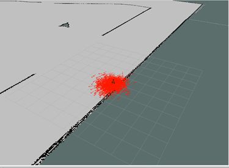
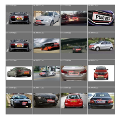
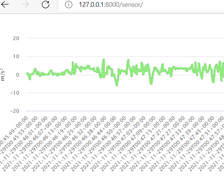
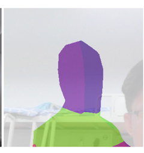

基于gmapping实现教学区小车定位及路径规划
基于Gmapping-SLAM 算法，结合ROS操作系统，以实现自主导航为终级目标，完成以软件学院教学区为地图的移动智能小车定位及路径规划的自主导航系统的仿真设计...
Read more →

基于OpenCV和YOLO的车牌字符识别
使用Yolov5，OpenCV, OCR技术，复现了一种基于字符分割与识别的车牌区域检测识别算法。并对不同环境下的车牌数据进行了检测。使用YOLOv5训练了车牌检测模型，用于进行更加准确与快速的车牌定位，之后根据车牌字符的规律，对字符进行分割，并使用Lenet进行字符识别...
Read more →

基于树莓派和WEB的多路传感器数据实时可视化
使用树莓派采集传感器数据，并将相关数据传输到服务器。基于Django使用Python在笔记本电脑上搭建服务器获取树莓派传输的数据，并使用Highcharts图表库实现网页显示相关的数据图表和百度地图的API展示GPS信息的定位...
Read more →

基于Tensorflow.js的bodypix实现人体语义分割
基于开源的机器学习模型bodypix，默认设置下，该模型可在 2018 版 15 英寸 MacBook Pro 以及 iPhone X 上分别以 25 fps 和 21 fps 的帧率，估测及渲染人物及身体部位的分割。在浏览器中使用TensorFlow.js对多人人物及24个身体部位进行分割...
Read more →